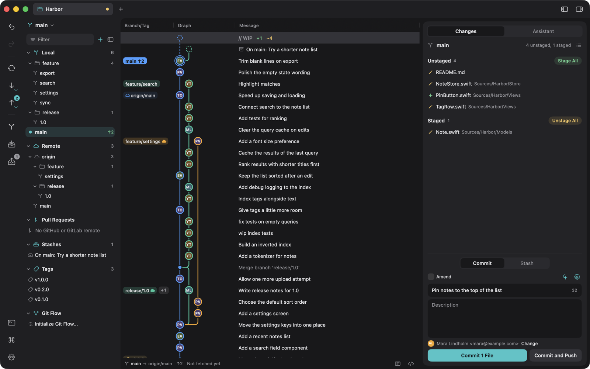
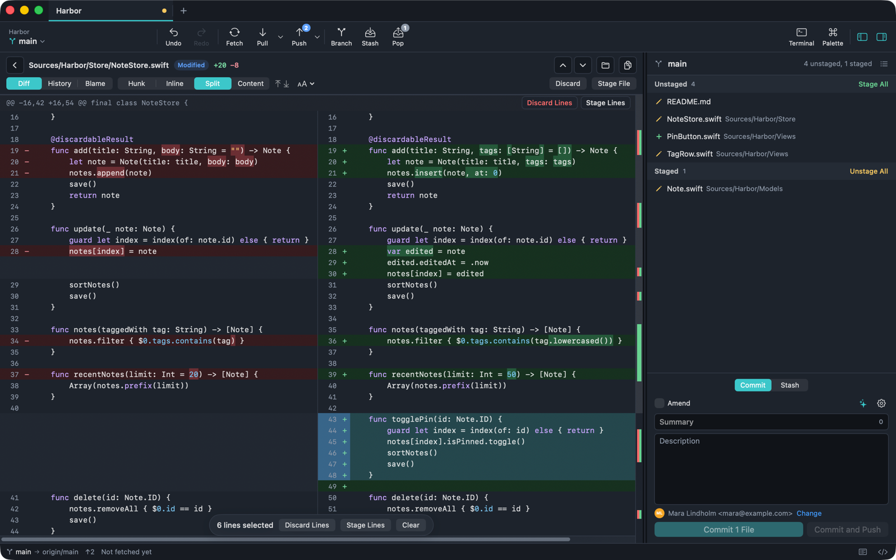
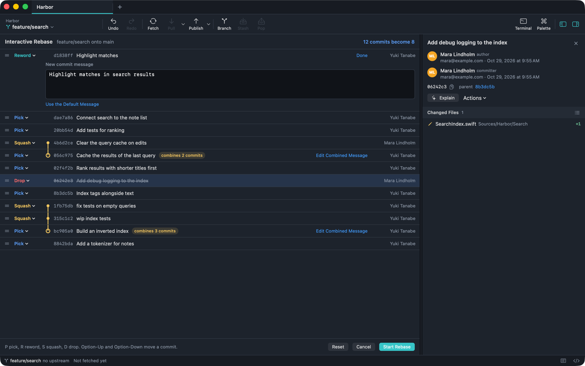
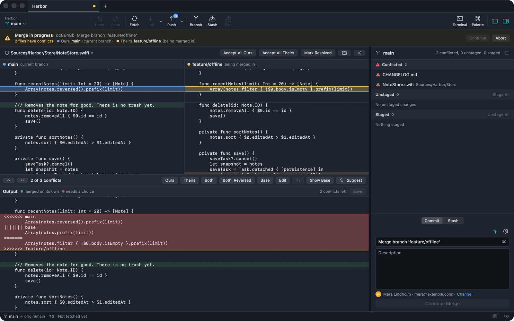

History that stays readable
Scan commits, branches, tags, remotes, authors, dates, and refs without losing the shape of the repository.
Branchlane 2.0 for Mac
A focused, native Git client for developers who want clear history, precise staging, and safer daily operations—without another account or cloud layer.
Everyday Git is free. The 14-day Pro trial for eligible new subscribers starts only after you confirm it in the app.

A native daily driver
Read repository state at a glance, make exact changes, and keep risky operations understandable from start to finish.
Scan commits, branches, tags, remotes, authors, dates, and refs without losing the shape of the repository.
Inspect side-by-side diffs, then stage a file, hunk, or individual line before you commit.
Create, switch, merge, rebase, and delete branches with repository state kept visible.
Fetch, pull, push, publish, and force push with lease over SSH or HTTPS, directly from your Mac.
Resolve with ours or theirs, mark files resolved, then continue or abort the in-progress operation.
Cherry-pick, revert, reset, stash, and amend with confirmations around the actions that deserve them.
Free for everyday Git
Clone or open a repository and do your daily work without a subscription. Branchlane Pro adds the tools for rewriting history, resolving conflicts, and working across repositories.

New in 2.0
Branchlane 2.0 is a complete rewrite, with a new Git engine and a new interface.
Lanes that keep a branch straight, column management, search, and hide or solo for branches. Drag one ref onto another to merge or rebase.
Staging, committing, branching, merging, syncing, and undo and redo work without a subscription.
A visual interactive rebase and a three-way conflict editor, plus conflict warnings before you merge.
Pull requests and issues on GitHub and GitLab with your own token. Your own local model, API key, or Apple's on-device model drafts commit messages and explains changes. Nothing is sent unless you ask.
Real repository work
Branchlane uses the space of your Mac for information density without burying the action you need next.


Simple App Store pricing
Branchlane is sold only on the App Store. Pro is monthly or yearly, with a 14-day trial for eligible new subscribers. No account, license key, team seat, or separate billing portal.
Private by architecture
Download Branchlane for free and use it for everyday Git. Start Pro only when you want the advanced tools.